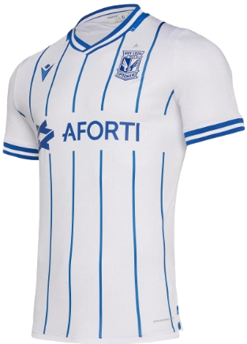
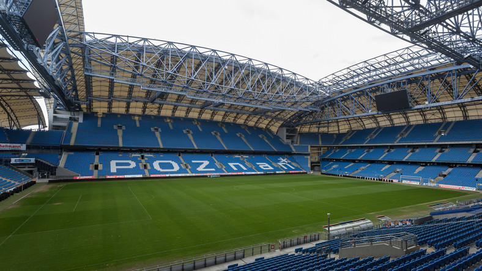

Najnowsze Informacje

LECH POZNAŃ


Informacje o klubie:
- KKS Lech Poznań Spółka Akcyjna
- Data założenia: 19 marca 1922
- Adres: Bułgarska 17, 60-320 Poznań
- Stadion: Stadion Miejski pojemność - 41 609 miejsc
- Prezes: Karol Klimczak (od 1 listopada 2011)
- Trener: Dariusz Żuraw (od 31 marca 2019)



Napastnicy
Pomocnicy
Obrońcy
Bramkarze
Fanatics Zone
ZGODY
Arka Gdynia
Cracovia
KSZO Ostrowiec Świętokrzyski
ŁKS Łódź
KOSY
Legia Warszawa
Wisła Kraków
Ruch Chorzów
Widzew Łódź
Lechia Gdańsk
Śląsk Wrocław
Pogoń Szczecin
Zagłębie Sosnowiec
Korona Kielce
Odra Opole
Elana Toruń
Polonia Warszawa
KKS Kalisz